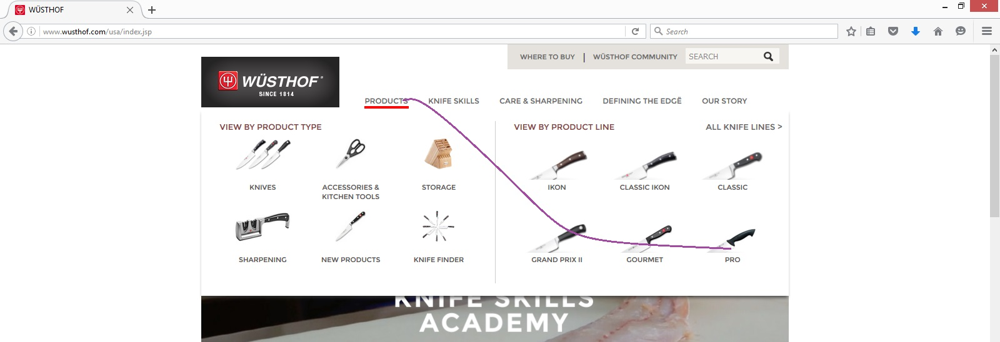

Web designers should be aware that humans do not move like machines. Machines tend to move in straight lines as defined by cartesian coordinates. Humans of course are not machines, and when we move it is curvilinear. If you look at the skeletal structure of a person, we are built of straight bones that move in a radius - moving in perfectly straight lines does not come natuarally or easily to human beings. So why do web designers think we do? The challenge of straight lines vs curvilinear is most notable in the use of some hover menus that require master mousing skills. Here, let's pick on Wustoff, great kitchen knives, not great web design. Here we see the home page, when hovering over the product menu, we see our options:
The developer here thinks human users will behave like machines and move in perfectly straight lines
Of course that is not the case, human movement is curvilinear, a more realistic path looks something like this:
The problem of course is that when we move in this natural curvilinear way, our path strays outside the hover area:

The menu is lost:

We have defined the problem, but what about solutions? Some suggested solutions are: